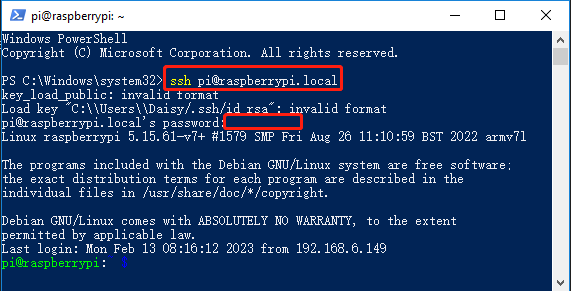

Nota
Ciao, benvenuto nella comunità SunFounder Raspberry Pi & Arduino & ESP32 su Facebook! Approfondisci Raspberry Pi, Arduino ed ESP32 con altri appassionati.
Perché unirsi?
Supporto esperto: Risolvi i problemi post-vendita e le sfide tecniche con l’aiuto della nostra comunità e del nostro team.
Impara e condividi: Scambia consigli e tutorial per migliorare le tue competenze.
Anteprime esclusive: Accedi in anticipo agli annunci di nuovi prodotti e anteprime.
Sconti speciali: Goditi sconti esclusivi sui nostri prodotti più recenti.
Promozioni festive e omaggi: Partecipa a promozioni festive e omaggi.
üëâ Sei pronto a esplorare e creare con noi? Clicca su [Qui] e unisciti oggi stesso!
Installare OpenSSH tramite PowerShell
Quando utilizzi il comando ssh <username>@<hostname>.local (o ssh <username>@<indirizzo IP>) per connetterti al tuo Raspberry Pi, ma compare il seguente messaggio di errore.
ssh: The term 'ssh' is not recognized as the name of a cmdlet, function, script file, or operable program. Check the spelling of the name, or if a path was included, verify that the path is correct and try again.
Significa che il sistema operativo del tuo computer è troppo vecchio e non ha OpenSSH preinstallato. Devi seguire il tutorial qui sotto per installarlo manualmente.
Digita
powershellnella barra di ricerca del tuo desktop Windows, fai clic con il pulsante destro suWindows PowerShelle selezionaEsegui come amministratoredal menu che appare.
Utilizza il seguente comando per installare
OpenSSH.Client.Add-WindowsCapability -Online -Name OpenSSH.Client~~~~0.0.1.0
Dopo l’installazione, verrà visualizzato il seguente output.
Path : Online : True RestartNeeded : False
Verifica l’installazione utilizzando il seguente comando.
Get-WindowsCapability -Online | Where-Object Name -like 'OpenSSH*'
Ora ti verrà indicato che
OpenSSH.Clientè stato installato correttamente.Name : OpenSSH.Client~~~~0.0.1.0 State : Installed Name : OpenSSH.Server~~~~0.0.1.0 State : NotPresent
Avvertimento
Se il prompt sopra non appare, significa che il sistema operativo Windows è ancora troppo vecchio. Si consiglia di installare un tool SSH di terze parti, come PuTTY.
Ora riavvia PowerShell e continua ad eseguirlo come amministratore. A questo punto, potrai accedere al tuo Raspberry Pi utilizzando il comando
ssh, dove ti verrà chiesto di inserire la password che hai configurato in precedenza.